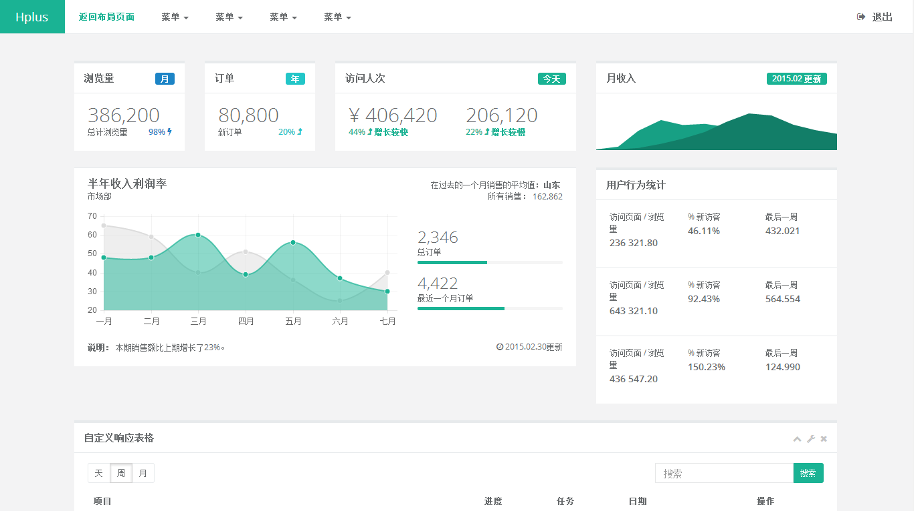

H+ 后台主题UI框架
非常感谢您选择和使用H+，在使用H+之前请注意以下事项：
1.为了保证所有功能都可正常使用，请在服务器环境（本地测试可使用localhost）下运行；
2.请认真阅读本文档后再开始使用H+；
如果您觉得当前H+版本还满足不了您的实际需求，希望添加新功能，请联系QQ：516477188，非常感谢。

非常感谢您选择和使用H+，在使用H+之前请注意以下事项：
1.为了保证所有功能都可正常使用，请在服务器环境（本地测试可使用localhost）下运行；
2.请认真阅读本文档后再开始使用H+；
如果您觉得当前H+版本还满足不了您的实际需求，希望添加新功能，请联系QQ：516477188，非常感谢。
H+是一个完全响应式，基于Bootstrap3.3.4最新版本开发的扁平化主题，她采用了主流的左右两栏式布局，使用了Html5+CSS3等现代技术，她提供了诸多的强大的可以重新组合的UI组件，并集成了最新的jQuery版本(v2.1.1)，当然，也集成了很多功能强大，用途广泛的jQuery插件，她可以用于所有的Web应用程序，如网站管理后台，网站会员中心，CMS，CRM，OA等等，当然，您也可以对她进行深度定制，以做出更强系统。
Hplus-v.3.0.1/
├── css/（css文件夹，包含框架主要css及示例、插件的css文件）
├── docs/（开发文档）
├── fonts/（字体图标，包含FontAwesome字体图标和Bootstrap自带的Glyphicons字体图标）
├── img/（图片）
├── js/（js文件夹，包含框架主要的js及示例、插件的js文件）
├── plugins/（存放Flash等插件）
├── 404.html（404页面）
├── 500.html（500页面）
├── agile_board.html（任务清单）
├── article.html（文章页面）
├── badges_labels.html（徽章，标签，进度条）
├── basic_gallery.html（基本图库）
├── blog.html（文章列表）
├── blueimp.html（Blueimp相册）
├── buttons.html（按钮）
├── calendar.html（日历）
├── carousel.html（图片切换）
├── chat_view.html（聊天窗口）
├── clients.html（客户管理）
├── code_editor.html（代码编辑器）
├── contacts.html（联系人）
├── css_animation.html（css动画）
├── diff.html（文本对比）
├── draggable_panels.html（拖动面板）
├── empy_page.html（空白页面）
├── faq.html（FAQ）
├── file_manager.html（文件管理）
├── form_advanced.html（高级表单）
├── form_avatar.html（富头像上传编辑器）
├── form_basic.html（基本表单）
├── form_builder.html（表单构建器）
├── form_editors.html（富文本编辑器）
├── form_file_upload.html（文件上传）
├── form_markdown.html（Markdown编辑器）
├── form_simditor.html（Simditor富文本编辑器）
├── form_validate.html（表单验证）
├── form_webuploader.html（百度 Web Uploader）
├── form_wizard.html（表单向导）
├── forum_main.html（论坛）
├── glyphicons.html（Glyphicons图标）
├── graph_echarts.html（百度ECHarts）
├── graph_flot.html（Flot图表）
├── graph_metrics.html（图表组合）
├── graph_morris.html（Morris.js图表）
├── graph_peity.html（Peity图表）
├── graph_rickshaw.html（Rickshaw图表）
├── graph_sparkline.html（Sparkline图表）
├── grid_options.html（栅格）
├── iconfont.html（阿里巴巴矢量图标库）
├── icons.html（字体图标）
├── index.html（主页）
├── index_v1.html（主页示例一）
├── index_v2.html（主页示例二）
├── index_v3.html（主页示例三）
├── index_v4.html（主页示例四）
├── index_v5.html（主页示例五）
├── invoice.html（单据）
├── invoice_print.html（单据打印）
├── jstree.html（树形视图）
├── layer.html（web弹层组件layer）
├── layerdate.html（日期选择器layerDate）
├── layerphoto.html（layer相册）
├── layouts.html（布局）
├── lockscreen.html（登录超时）
├── login.html（登录）
├── login_v2.html（登录2）
├── mail_compose.html（写邮件）
├── mail_detail.html（查看邮件）
├── mailbox.html（收件箱）
├── modal_window.html（模态窗口）
├── nestable_list.html（嵌套列表）
├── notifications.html（通知 & 提示）
├── pin_board.html（标签墙）
├── plyr.html（视频、音频播放）
├── profile.html（个人资料）
├── project_detail.html（项目详情）
├── projects.html（项目）
├── register.html（注册）
├── search_result.html（搜索结果）
├── skin-config.html（主题设置选项）
├── social_feed.html（信息流）
├── spinners.html（加载动画）
├── suggest.html（搜索建议）
├── sweetalert.html（Sweet alert）
├── table_basic.html（基础表格）
├── table_data_tables.html（数据表格）
├── table_foo_table.html（FooTable）
├── table_jqgrid.html（jqGird）
├── table_bootstrap.html（Bootstrap Table）
├── tabs_panels.html（选项卡 & 面板）
├── teams_board.html（团队管理）
├── timeline.html（时间轴）
├── timeline_v2.html（时间轴2）
├── toastr_notifications.html（Toastr通知）
├── tree_view.html（树形视图）
├── typography.html（排版）
├── webim.html（WebIM即时通讯）
├── widgets.html（小部件）
框架的正常结构元素包含以下几个方面（参考index.html）：
#wrapper body元素之后的主容器nav .navbar-static-side 左侧导航菜单.#page-wrapper 页面内容的主容器nav .navbar-static-top 顶部菜单.footer 页脚主容器框架的正常子页面结构元素包含以下几个方面（参考empty_page.html）：
.page-heading 页面标题及包屑式导航容器.wrapper-content html元素主容器
在所有页面的 <head> 中，应包含的meta和css等如下：
<!DOCTYPE html>
<head>
<!-- Meta -->
<meta charset="utf-8">
<meta name="viewport" content="width=device-width, initial-scale=1.0"<
<meta name="renderer" content="webkit">
<title>H+ 后台主题UI框架 - 页面</title>
<!-- CSS文件 -->
<link href="css/bootstrap.min.css" rel="stylesheet">
<link href="css/font-awesome.css" rel="stylesheet">
<link href="css/animate.css" rel="stylesheet">
<link href="css/style.css" rel="stylesheet">
</head>
<body class="fixed-sidebar full-height-layout gray-bg">
<div id="wrapper">
<!--左侧导航开始-->
<nav class="navbar-default navbar-static-side" role="navigation">
<div class="nav-close"><i class="fa fa-times-circle"></i></div>
<div class="sidebar-collapse">
<ul class="nav" id="side-menu">
<li class="nav-header">
<div class="dropdown profile-element">
<span><img alt="image" class="img-circle" src="img/profile_small.jpg" /></span>
<a data-toggle="dropdown" class="dropdown-toggle" href="#">
<span class="clear">
<span class="block m-t-xs"><strong class="font-bold">Beaut-zihan</strong></span>
<span class="text-muted text-xs block">超级管理员<b class="caret"></b></span>
</span>
</a>
<ul class="dropdown-menu animated fadeInRight m-t-xs">
<li><a class="J_menuItem" href="form_avatar.html">修改头像</a>
</li>
……
</ul>
</div>
<div class="logo-element">H+
</div>
</li>
<li>
<a href="#">
<i class="fa fa-home"></i>
<span class="nav-label">主页</span>
<span class="fa arrow"></span>
</a>
<ul class="nav nav-second-level">
<li>
<a class="J_menuItem" href="index_v1.html" data-index="0">主页示例一</a>
<!--默认主页需在对应的菜单a元素上添加data-index="0"-->
</li>
<li>
<a class="J_menuItem" href="index_v2.html">主页示例二</a>
</li>
<li>
<a class="J_menuItem" href="index_v3.html">主页示例三</a>
</li>
……
</ul>
</li>
<li>
<!--其他菜单项-->
</li>
</ul>
</div>
</nav>
<!--左侧导航结束-->
<!--右侧部分开始-->
<div id="page-wrapper" class="gray-bg dashbard-1">
<div class="row border-bottom">
<nav class="navbar navbar-static-top" role="navigation" style="margin-bottom: 0">
……
</nav>
</div>
<div class="row content-tabs">
<button class="roll-nav roll-left J_tabLeft"><i class="fa fa-angle-double-left"></i>
</button>
<nav class="page-tabs J_menuTabs">
<div class="page-tabs-content">
<a href="javascript:;" class="active J_menuTab" data-id="index_v1.html">首页</a>
<!--默认主页需在对应的选项卡a元素上添加data-id="默认主页的url"-->
</div>
</nav>
<button class="roll-nav roll-right J_tabRight"><i class="fa fa-angle-double-right"></i>
</button>
</div>
<div class="row J_mainContent" id="content-main">
<iframe class="J_iframe" name="iframe0" width="100%" height="100%" src="index_v1.html?v=4.0" frameborder="0" data-id="index_v1.html" seamless></iframe>
<!--默认主页需在对应的页面显示iframe元素上添加name="iframe0"和data-id="默认主页的url"-->
</div>
<div class="footer">
<div class="pull-right">© 2014-2015 <a href="http://www.zi-han.net/" target="_blank">zihan's blog</a>
</div>
</div>
</div>
<!--右侧部分结束-->
</div>
<!-- 全局js -->
<script src="js/jquery.min.js?v=2.1.4"></script>
<script src="js/bootstrap.min.js?v=3.3.6"></script>
<script src="js/plugins/metisMenu/jquery.metisMenu.js"></script>
<script src="js/plugins/slimscroll/jquery.slimscroll.min.js"></script>
<script src="js/plugins/layer/layer.min.js"></script>
<!-- 自定义js -->
<script src="js/hplus.js?v=4.1.0"></script>
<script type="text/javascript" src="js/contabs.js"></script>
<!-- 第三方插件 -->
<script src="js/plugins/pace/pace.min.js"></script>
</body>
主内容包括页面顶部和页面内容
<div class="row wrapper border-bottom white-bg page-heading">
<div class="col-lg-9">
<h2>这里是标题</h2>
<ol class="breadcrumb">
<li>
<a href="index.html">这是</a>
</li>
<li class="active">
<strong>包屑式导航</strong>
</li>
</ol>
</div>
<div class="col-lg-3">
<div class="title-action">
<a href="" class="btn btn-primary">活动区域</a>
</div>
</div>
</div>
<div class="row">
<div class="col-lg-12">
<div class="wrapper wrapper-content">
</div>
</div>
</div>
注意：必要时在iframe子页面中需要引入js/content.js，此节可参考empty_page.html
二级菜单示例
<nav class="navbar navbar-static-top" role="navigation">
<div class="navbar-header">
<button aria-controls="navbar" aria-expanded="false" data-target="#navbar" data-toggle="collapse" class="navbar-toggle collapsed" type="button">
<i class="fa fa-reorder"></i>
</button>
<a href="#" class="navbar-brand">Hplus</a>
</div>
<div class="navbar-collapse collapse" id="navbar">
<ul class="nav navbar-nav">
<li class="active">
<a aria-expanded="false" role="button" href="layouts.html"> 返回布局页面</a>
</li>
<li class="dropdown">
<a aria-expanded="false" role="button" href="#" class="dropdown-toggle" data-toggle="dropdown"> 菜单 <span class="caret"></span></a>
<ul role="menu" class="dropdown-menu">
<li><a href="">菜单列表</a>
</li>
<li><a href="">菜单列表</a>
</li>
<li><a href="">菜单列表</a>
</li>
<li><a href="">菜单列表</a>
</li>
</ul>
</li>
<li class="dropdown">
<a aria-expanded="false" role="button" href="#" class="dropdown-toggle" data-toggle="dropdown"> 菜单 <span class="caret"></span></a>
<ul role="menu" class="dropdown-menu">
<li><a href="">菜单列表</a>
</li>
<li><a href="">菜单列表</a>
</li>
<li><a href="">菜单列表</a>
</li>
<li><a href="">M菜单列表</a>
</li>
</ul>
</li>
<li class="dropdown">
<a aria-expanded="false" role="button" href="#" class="dropdown-toggle" data-toggle="dropdown"> 菜单 <span class="caret"></span></a>
<ul role="menu" class="dropdown-menu">
<li><a href="">菜单列表</a>
</li>
<li><a href="">菜单列表</a>
</li>
<li><a href="">菜单列表</a>
</li>
<li><a href="">菜单列表</a>
</li>
</ul>
</li>
<li class="dropdown">
<a aria-expanded="false" role="button" href="#" class="dropdown-toggle" data-toggle="dropdown"> 菜单 <span class="caret"></span></a>
<ul role="menu" class="dropdown-menu">
<li><a href="">菜单列表</a>
</li>
<li><a href="">菜单列表</a>
</li>
<li><a href="">菜单列表</a>
</li>
<li><a href="">菜单列表</a>
</li>
</ul>
</li>
</ul>
<ul class="nav navbar-top-links navbar-right">
<li>
<a href="login.html">
<i class="fa fa-sign-out"></i> 退出
</a>
</li>
</ul>
</div>
</nav>
H+为您提供了以下几种布局方式，可以灵活引用：
固定顶部导航是指当屏幕滚动时顶部导航固定在顶部显示
实现顶部导航固定我们需要在body元素上添加.fixed-nav
<body class="fixed-nav">
接下来我们需要修改.navbar-static-top为.navbar-fixed-top
<nav class="navbar navbar-fixed-top" role="navigation">
RTL（从右向左阅读）
添加RTL支持需要我们在所有页面的body元素（包括iframe页面）上添加.rtls
<body class="rtls">
接下来我们需要在head中引入相关的支持文件
<!-- Bootstrap --> <link href="css/bootstrap.min.css" rel="stylesheet"> <link href="css/plugins/bootstrap-rtl/bootstrap-rtl.css" rel="stylesheet">
添加RTL支持之后界面会变成下图所示的样子：

布局2是上下布局，内容居中的布局形式
布局2的示例我们可以从查看index_v5.html
使用布局2后的效果如下图：
除默认皮肤外，H+还包含了2套皮肤可供选择
可以通过为元素添加不同的class实现换肤，同时您也可以制作自己的皮肤
如：我们可以在body元素上添加.skin-1
在CSS文件style.css中，您可以修改这些皮肤的颜色和样式
.skin-1 - 蓝色主题.skin-3 - 黄色/紫色主题主题设置是一个实时预览主题改变效果的设置框，它放在主题的右上角的位置（点击齿轮图标可以展开和收起）
如果您在本地测试时看不到主题设置框，建议您放到localhost下面
我们没有直接在页面中添加主题设置的html代码，而是通过在hplus.js文件中添加了对应的函数来实现，您可以通过查找“// //主题设置”注释来查看对应代码
如果您需要移除主题设置框，只需要注释或移除对应的代码即可
直接覆盖即可。
H+基于Bootstrap，所以您可以参考以下文档：
H+集成了很多国内外优秀的第三方插件，对于这些插件，暂时没有整理文档，因为我相信再怎么整理，都不如插件官方的文档权威，但是基本上都提供了官方的链接，请各位同学根据需要自行百度，备梯和参考官方文档。另外关于集成的插件，请多看看官方文档，不建议照着demo一试，不行，就找我，一般情况下，我不负责解决由于各种不注意，不细心，不学习所引起的插件使用问题。
如果需要二次的付费开发服务，加QQ：516477188